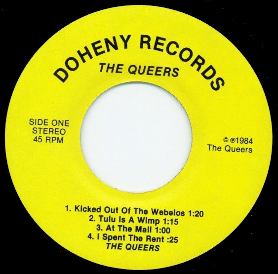

The world is still rocking and skating!
Steroid - Chainmail Commando (2025)

Australia continues to cement itself as the king of rock! The vocals are great here!
"An Evening With Beverly Luff Linn" Official Soundtrack (2018)

I love Andrew Hung's movie soundtracks!
Power Pants - PP7 (2025)


The best song of the year so far!
La Femme - Psycho Tropical Berlin (2013)

I usually hear about the Oi! bands from France but this is great too!
Christian Mistress - Agony and Opium (2010))

Although they're a nwobhm metal band, back around the time of this album they used to close punk shows and everybody went wild!
Roky Erikcon - The Evil One (1980)

Roky was from Austin, he was a beutiful person and a very tortured soul who unfortunately lived in Texas
Funeral Mess - Following the Apocalypse (2024)

Great hardcore punk from Georgia to follow the apocalypse to!
Molchat Dolma - etazhi (2018)

Fantastic synth post-punk from Belarus!
Blanket of M - Finger Forest E.P. (2025)

Cool Ramone's style punk from Tyler, Texas!
The Queers - Kicked Out of the Webelos 7" EP (1984)
One of the greatest punk records of all time!
Good Ramen - Live & Lazy (2025)

Some aussies playing cool rock in a record shop!